Courses
CST8913 Cloud Migration
Course map
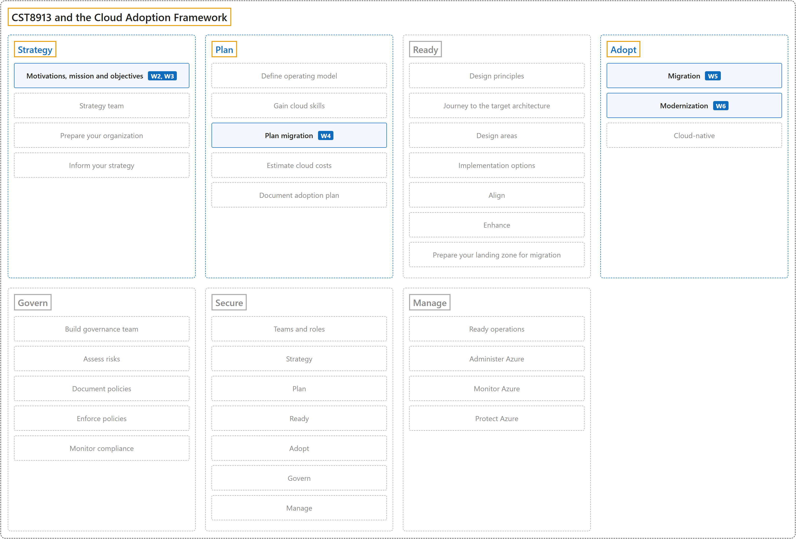
| Keyword | Description | 中文翻译 |
|---|---|---|
| 1 Strategy | Why an organization adopts Azure. | 组织为什么采用 Azure。 |
| 1.1 Motivations, mission and objectives (W2, W3) | W2 introduces the cloud migration motivators (Lab 2); W3 covers the cloud adoption strategy: motivations, business outcomes, financial and technical considerations, and the adoption horizons. | W2 讲云迁移动机（Lab 2）；W3 讲云采用战略：动机、业务成果、财务和技术考量，以及采用阶段（horizons）。 |
| 2 Plan | Turns the strategy into an actionable plan. | 把战略变成可执行的计划。 |
| 2.1 Plan migration (W4) | W4 covers discovery and assessment and the migration plan. | W4 讲发现与评估，以及迁移计划。 |
| 3 Ready | Builds the Azure landing zone; not taught in W1 to W6. | 搭建 Azure 着陆区；W1 到 W6 没讲。 |
| 4 Adopt | Migrates, modernizes and builds workloads. | 迁移、现代化和新建工作负载。 |
| 4.1 Migration (W5) | W5 moves workloads by rehosting. | W5 用重新托管迁移工作负载。 |
| 4.2 Modernization (W6) | W6 improves workloads by replatforming them onto PaaS; the W6 slides say refactoring. | W6 通过换平台把工作负载改到 PaaS 上；W6 课件叫重构（refactoring）。 |
| 5 Govern | Sets guardrails; not taught in W1 to W6. | 设置护栏；W1 到 W6 没讲。 |
| 6 Secure | Protects the Azure cloud estate; not taught in W1 to W6. | 保护 Azure 云资产；W1 到 W6 没讲。 |
| 7 Manage | Operates Azure with RAMP; not taught in W1 to W6. | 用 RAMP 运营 Azure；W1 到 W6 没讲。 |
Lab 1: Git, GitHub and Markdown (W1)
Scenario: Set up a private GitHub repository for the course and submit Lab 1, written in Markdown, through a branch and a pull request. Git records every change as a commit; GitHub hosts the repository for sharing and review.
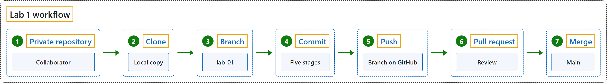
| Keyword | Description | 中文翻译 |
|---|---|---|
| 1 Private repository | A private repository is visible only to invited collaborators, such as the instructor. | 私有仓库只有受邀的协作者（比如老师）能看到。 |
| 2 Clone | Cloning copies the repository, with its full history, to a local copy on the computer. | 克隆把仓库连同完整历史复制到电脑上，成为本地副本。 |
| 3 Branch | A branch such as lab-01 keeps the work off main until it is reviewed. | 像 lab-01 这样的分支让作业在审阅之前不进 main。 |
| 4 Commit | A commit records one stage of the work; Lab 1 was built in five stages. | 一次提交记录作业的一个阶段；Lab 1 分五个阶段完成。 |
| 5 Push | A push sends the branch to GitHub. | 推送把分支发到 GitHub。 |
| 6 Pull request | A pull request asks to merge the branch, after a review of the changed files. | 拉取请求在审阅改动的文件之后，请求合并这个分支。 |
| 7 Merge | Merging brings the reviewed branch into main. | 合并把审阅过的分支并入 main。 |
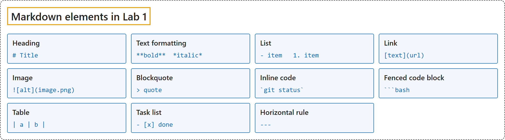
| Keyword | Description | 中文翻译 |
|---|---|---|
| 1 Heading | A line starting with # signs; more signs make a lower level. | 以 # 开头的一行；# 越多，级别越低。 |
| 2 Text formatting | Two asterisks around text make it bold; one asterisk makes it italic. | 文字两边加两个星号变粗体；加一个星号变斜体。 |
| 3 List | Lines starting with a dash make a bulleted list; numbers make a numbered list. | 以短横线开头的行组成无序列表；以数字开头组成有序列表。 |
| 4 Link | The link text in square brackets, then the URL in parentheses. | 方括号里写链接文字，后面圆括号里写 URL。 |
| 5 Image | Like a link with an exclamation mark in front; the brackets hold the alt text. | 和链接一样，前面加一个感叹号；方括号里写替代文字。 |
| 6 Blockquote | A line starting with > becomes a quote. | 以 > 开头的一行变成引用。 |
| 7 Inline code | Backticks around a word show it as code inside a sentence. | 单词两边加反引号，在句子里显示成代码。 |
| 8 Fenced code block | Three backticks above and below a block, with the language name, such as bash. | 代码块上下各加三个反引号，并写上语言名，比如 bash。 |
| 9 Table | Cells separated by vertical bars, with a dash row under the header. | 单元格用竖线隔开，表头下面加一行短横线。 |
| 10 Task list | A list item with square brackets; an x marks it done. | 带方括号的列表项；x 表示已完成。 |
| 11 Horizontal rule | Three dashes on a line draw a dividing line. | 一行写三个短横线，画出一条分隔线。 |
Lab 2: Levi Strauss migration case study (W2)
Scenario: Levi Strauss & Co. moves from several datacenters, about 160 applications and nine ERP systems in 110 countries to Azure, as it shifts to direct-to-consumer sales.
CAF: Strategy > Motivations, mission and objectives and Plan > Plan migration.
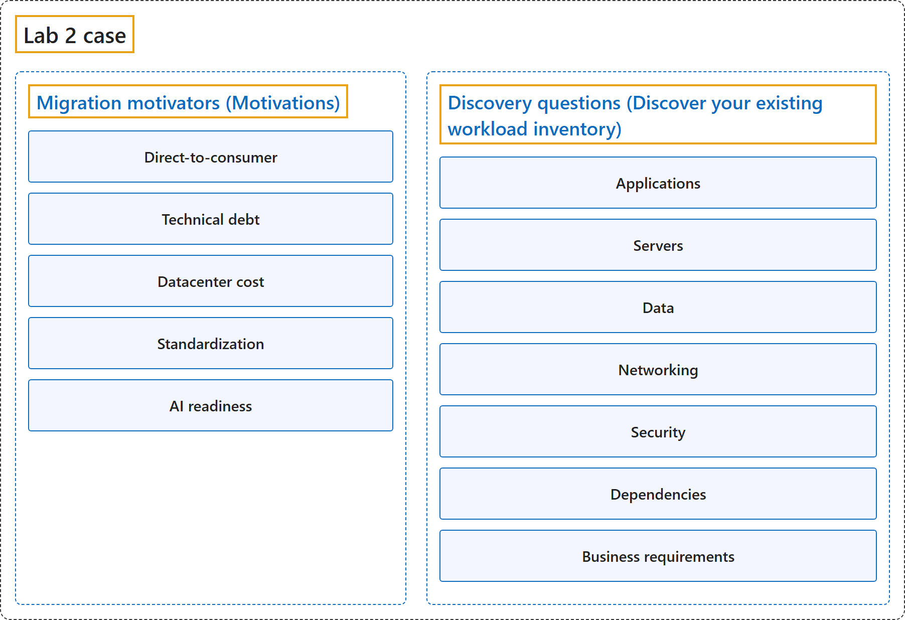
| Keyword | Description | 中文翻译 |
|---|---|---|
| 1 Migration motivators (Motivations) | The business reasons Levi Strauss moves to the cloud; the Lab 2 rubric says migration motivators. | Levi Strauss 上云的业务原因；Lab 2 评分表叫 migration motivators。 |
| 1.1 Direct-to-consumer | Becoming a USD 10 billion DTC brand needs speed, automation and data. | 要成为 100 亿美元的直面消费者（DTC）品牌，需要速度、自动化和数据。 |
| 1.2 Technical debt | About 160 applications, several datacenters, nine ERP systems and different processes in 110 countries. | 大约 160 个应用、多个数据中心、九套 ERP 系统，110 个国家流程各不相同。 |
| 1.3 Datacenter cost | Owning and operating datacenters became too expensive. | 自建和运营数据中心变得太贵。 |
| 1.4 Standardization | One global ERP means consistent processes and data. | 一套全球 ERP 意味着统一的流程和数据。 |
| 1.5 AI readiness | Unified data on a standard platform is the foundation for AI and agents. | 标准平台上的统一数据是 AI 和智能体的基础。 |
| 2 Discovery questions (Discover your existing workload inventory) | The questions that complete the picture before planning; the Lab 2 rubric says infrastructure discovery questions. | 做计划之前要问清楚的问题；Lab 2 评分表叫 infrastructure discovery questions。 |
| 2.1 Applications | Which applications are business-critical, and which could be retired or replaced with SaaS? | 哪些应用是业务关键的？哪些可以下线或换成 SaaS？ |
| 2.2 Servers | How many servers, how heavily used, and which run an OS near end of support? | 有多少台服务器、使用率多高、哪些的操作系统快到支持期结束？ |
| 2.3 Data | How much data the nine ERP systems hold, and how it merges into one data model. | 九套 ERP 系统有多少数据，怎样合并成一个数据模型。 |
| 2.4 Networking | How stores, distribution centers and offices in 110 countries connect, and what latency they need. | 110 个国家的门店、配送中心和办公室怎样连接，需要多低的延迟。 |
| 2.5 Security | How identity is managed, which data-residency laws apply, and the RPO and RTO. | 身份怎样管理，适用哪些数据驻留法律，RPO 和 RTO 是多少。 |
| 2.6 Dependencies | Which applications depend on each other, and so must move in the same wave. | 哪些应用互相依赖，因此必须在同一批次迁移。 |
| 2.7 Business requirements | The acceptable downtime, the retail peak periods to avoid, and the budget and deadline. | 可接受的停机时间、要避开的零售高峰期，以及预算和截止日期。 |
CAF: Plan > Define operating model.
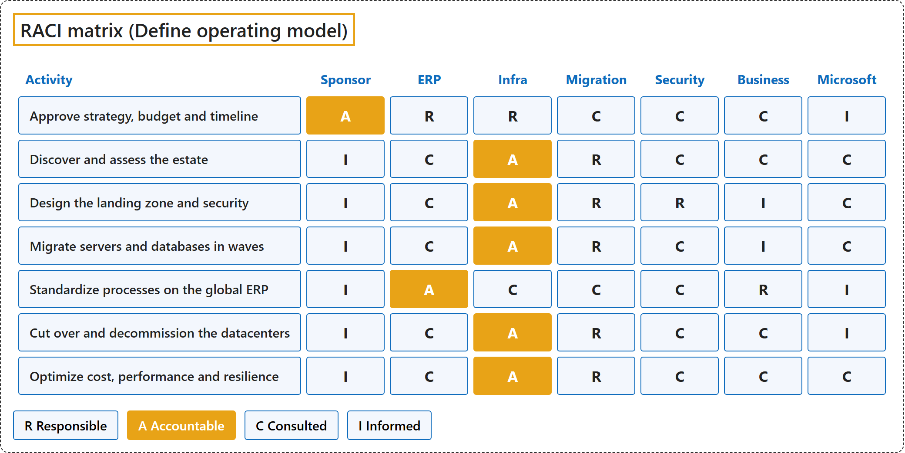
| Keyword | Description | 中文翻译 |
|---|---|---|
| R Responsible | Does the work; the migration team for most activities. | 干活的人；大多数活动由迁移团队负责。 |
| A Accountable | The single owner of an activity; the infrastructure director for discovery, landing zone, migration, cutover and optimization. | 一项活动的唯一负责人；发现、着陆区、迁移、切换和优化都由基础设施总监负责。 |
| C Consulted | Gives input before decisions, such as security and business leaders. | 决策前提供意见，比如安全和业务负责人。 |
| I Informed | Kept up to date, such as the sponsor after approval. | 随时知情，比如批准之后的发起人。 |
CAF: Plan > Plan migration.
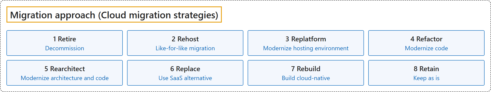
| Keyword | Description | 中文翻译 |
|---|---|---|
| 1 Retire | Decommissions a workload with no business value, so it does not move; used for applications no longer needed. | 停用没有业务价值的工作负载，所以它不迁移；用于不再需要的应用。 |
| 2 Rehost | Moves the workload like for like with minimal changes, such as a server to an Azure VM; used for most servers. | 原样迁移工作负载，改动最少，比如把服务器搬到 Azure 虚拟机；大多数服务器用这种方式。 |
| 3 Replatform | Changes the hosting environment to PaaS with minimal code changes, such as SQL Server on a VM to Azure SQL; fits the databases (Azure SQL Managed Instance) and third-party apps (AKS), which the W2 slides and Lab 2 call Refactor. | 把托管环境换成 PaaS，代码改动很少，比如把虚拟机上的 SQL Server 换成 Azure SQL；符合数据库（Azure SQL Managed Instance）和第三方应用（AKS），W2 课件和 Lab 2 把它们叫作 Refactor。 |
| 4 Refactor | Improves the internal structure of the code without adding features, to reduce technical debt. | 改进代码的内部结构，不增加新功能，以减少技术债。 |
| 5 Rearchitect | Redesigns the architecture and code, such as splitting a monolith into microservices; too slow for 160 applications before the datacenter exit. | 重新设计架构和代码，比如把单体应用拆成微服务；在退出数据中心之前对 160 个应用这样做太慢。 |
| 6 Replace | Swaps the workload for a SaaS product, so no custom code remains to maintain; the nine ERP systems become one global ERP. | 把工作负载换成 SaaS 产品，不再有自定义代码要维护；九套 ERP 系统变成一套全球 ERP。 |
| 7 Rebuild | Develops the workload again from the start with cloud-native solutions, when the old system is too outdated to modernize. | 用云原生方案从头重新开发工作负载，适用于旧系统过于陈旧、无法现代化的情况。 |
| 8 Retain | Keeps the workload where it is, when it is stable or cannot be migrated, for example because of regulations. | 工作负载留在原地，适用于它运行稳定或无法迁移的情况，比如受法规限制。 |
CAF: Plan > Plan migration.
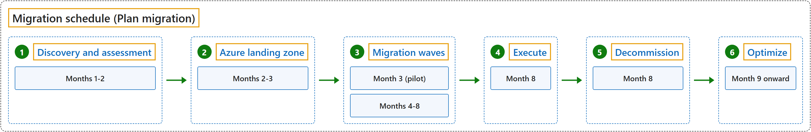
| Keyword | Description | 中文翻译 |
|---|---|---|
| 1 Discovery and assessment | Months 1-2: inventory with Azure Migrate, map dependencies, choose a strategy per workload. | 第 1 到 2 个月：用 Azure Migrate 盘点，梳理依赖关系，为每个工作负载选迁移策略。 |
| 2 Azure landing zone | Months 2-3: subscriptions, networking, identity, security and backup. | 第 2 到 3 个月：订阅、网络、身份、安全和备份。 |
| 3 Migration waves | Month 3: a pilot wave of low-risk servers tests replication, cutover and rollback. Months 4-8: dependent applications move together, avoiding retail peak periods. | 第 3 个月：试点波次迁移低风险服务器，测试复制、切换和回滚。第 4 到 8 个月：互相依赖的应用一起迁，避开零售高峰期。 |
| 4 Execute | Month 8: final cutover in approved downtime windows. | 第 8 个月：在批准的停机窗口内完成最终切换。 |
| 5 Decommission | Month 8: the datacenters are decommissioned after the cutover. | 第 8 个月：切换之后关停数据中心。 |
| 6 Optimize | Month 9 onward: right-size, track cost, test disaster recovery. | 第 9 个月起：调整规格、跟踪成本、测试灾难恢复。 |
Cloud Adoption Framework (W2, W3)
CAF: All seven phases.
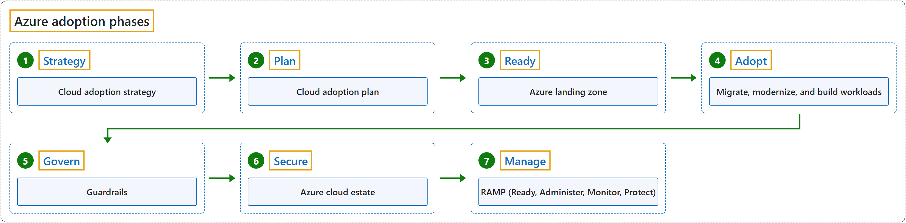
| Keyword | Description | 中文翻译 |
|---|---|---|
| Azure adoption phases | The Cloud Adoption Framework has seven Azure adoption phases. | 云采用框架有七个 Azure 采用阶段。 |
| 1 Strategy | Strategy sets why an organization adopts Azure: the cloud adoption strategy. | 战略确定组织为什么采用 Azure：即云采用战略。 |
| 2 Plan | Plan turns that strategy into an actionable plan: the cloud adoption plan. | 计划把战略变成可执行的计划：即云采用计划。 |
| 3 Ready | Ready builds the Azure landing zone. | 就绪搭建 Azure 着陆区。 |
| 4 Adopt | Adopt migrates, modernizes and builds workloads. | 采用负责迁移、现代化和新建工作负载。 |
| 5 Govern | Govern sets guardrails. | 治理设置护栏。 |
| 6 Secure | Secure protects the Azure cloud estate. | 安全保护 Azure 云资产。 |
| 7 Manage | Manage operates Azure with RAMP: Ready, Administer, Monitor, Protect. | 管理用 RAMP 运营 Azure：就绪、管理、监控、保护。 |
Lab 3: IaaS and PaaS architecture (W3)
Scenario: A web application with a React UI, a Flask web server and a PostgreSQL database is designed on Azure twice: once on IaaS, once on PaaS.
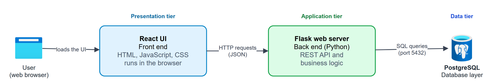
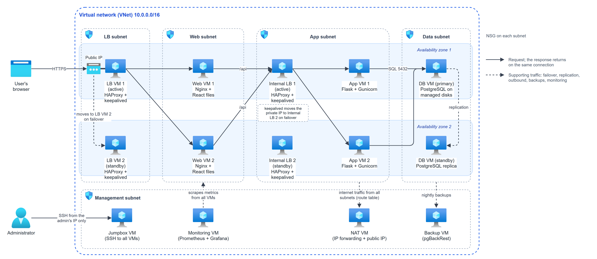
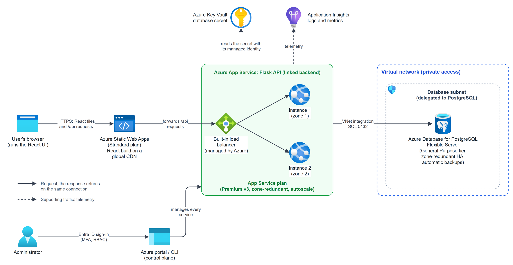
| Keyword | Description | 中文翻译 |
|---|---|---|
| 1 IaaS | In IaaS, the provider supplies VMs, disks and network; the team builds and maintains everything on them. | 在 IaaS 里，云服务商提供虚拟机、磁盘和网络；上面的一切由团队自己搭建和维护。 |
| 2 N-tier, subnets, NSGs | In an N-tier architecture, each tier has its own subnet, and its NSG allows only traffic from the tier in front of it. | 在 N 层架构里，每一层有自己的子网，它的 NSG（网络安全组）只允许前一层的流量进来。 |
| 3 Availability zones | Availability zones are separate datacenters in one region, so one zone can fail. | 可用区是同一区域里相互独立的数据中心，所以一个区坏了也没关系。 |
| 4 Load balancer | A load balancer spreads requests across servers and removes failed ones. | 负载均衡器把请求分给多台服务器，并把坏掉的服务器移出去。 |
| 5 Replication | Database replication keeps a standby in sync with the primary. | 数据库复制让备用库和主库保持同步。 |
| 6 Management VMs | IaaS needs its own jumpbox, monitoring, NAT and backup servers. | IaaS 需要自己的跳板机、监控、NAT 和备份服务器。 |
| 7 PaaS | In PaaS, each tier becomes a managed service, and the provider runs the servers, patching, scaling and backups. | 在 PaaS 里，每一层变成一个托管服务，服务器、打补丁、扩缩容和备份都由云服务商负责。 |
| 8 App Service | App Service runs web apps on several instances behind a built-in load balancer, with autoscale. | App Service 在内置负载均衡器后面用多个实例运行 Web 应用，并支持自动扩缩。 |
| 9 VNet integration | VNet integration lets App Service reach resources that accept private connections only. | VNet 集成让 App Service 能访问只接受私有连接的资源。 |
| 10 Key Vault, Application Insights | Key Vault stores secrets; Application Insights collects telemetry. | Key Vault 保存机密；Application Insights 收集遥测数据。 |
| 11 IaaS or PaaS | IaaS gives full control but more operations work; PaaS gives less control and no servers to manage. | IaaS 给你完全的控制权，但运维工作更多；PaaS 控制权少一些，但没有服务器要管。 |
Migration phases (W4)
CAF: Plan > Plan migration and Adopt > Migration.
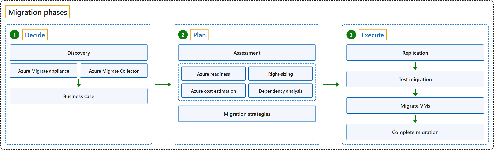
| Keyword | Description | 中文翻译 |
|---|---|---|
| 1 Decide | The first phase identifies the workloads and decides whether to migrate. | 第一阶段识别工作负载，并决定是否迁移。 |
| 1.1 Discovery | Discovery identifies the workloads. | 发现识别工作负载。 |
| 1.1.1 Azure Migrate appliance | The appliance collects configuration and performance data and sends it to Azure Migrate. | 设备（appliance）收集配置和性能数据，发送到 Azure Migrate。 |
| 1.1.2 Azure Migrate Collector | The Collector takes a snapshot without continuous Azure connectivity. | Collector 在不需要持续连接 Azure 的情况下拍一张快照。 |
| 1.2 Business case | A business case estimates the costs and savings of moving to Azure. | 业务案例估算迁到 Azure 的成本和节省。 |
| 2 Plan | The second phase plans the migration in detail. | 第二阶段详细规划迁移。 |
| 2.1 Assessment | Assessments find the four results below. | 评估得出下面四项结果。 |
| 2.1.1 Azure readiness | Whether servers are ready for migration to Azure. | 服务器是否可以迁移到 Azure。 |
| 2.1.2 Right-sizing | The size of the Azure VMs after migration. | 迁移后 Azure 虚拟机的规格。 |
| 2.1.3 Azure cost estimation | The cost of running the servers in Azure. | 服务器在 Azure 上运行的成本。 |
| 2.1.4 Dependency analysis | The network dependencies between servers. | 服务器之间的网络依赖关系。 |
| 2.2 Migration strategies | The strategy chosen for each workload. | 为每个工作负载选定的策略。 |
| 3 Execute | The third phase performs the migration or modernization. | 第三阶段执行迁移或现代化。 |
| 3.1 Replication | Replication copies the VMs to Azure. | 复制把虚拟机复制到 Azure。 |
| 3.2 Test migration | A test migration simulates the migration in a non-production network. | 测试迁移在非生产网络里模拟迁移。 |
| 3.3 Migrate VMs | After the test works, the source machines are migrated. | 测试通过后，迁移源机器。 |
| 3.4 Complete migration | Completing the migration stops replication and cleans up its state. | 完成迁移会停止复制，并清理复制状态。 |
Lab 4: Discovery and assessment (W4)
CAF: Plan > Plan migration.
Scenario: Five on-premises VMware servers, WEB-01, APP-01, DB-01, DC-01 and FILE-01, move to Azure VMs with minimal downtime; a written simulation with no CPU, memory or usage data.
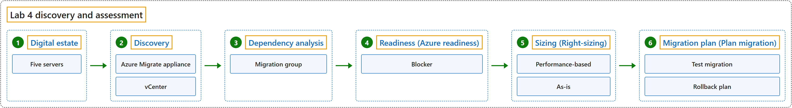
| Keyword | Description | 中文翻译 |
|---|---|---|
| 1 Digital estate | Everything IT runs today; here the five servers and their applications and data. | IT 现在运行的一切；这里是五台服务器以及上面的应用和数据。 |
| 2 Discovery | Agentless: the Azure Migrate appliance on vCenter reads each VM over port 443 for about 30 days. | 无代理：装在 vCenter 上的 Azure Migrate 设备通过 443 端口读取每台虚拟机，持续大约 30 天。 |
| 3 Dependency analysis | Shows each server's TCP connections; WEB-01, APP-01 and DB-01 form one migration group. | 显示每台服务器的 TCP 连接；WEB-01、APP-01 和 DB-01 组成一个迁移组。 |
| 4 Readiness (Azure readiness) | WEB-01, APP-01, DC-01 conditionally ready; DB-01 insufficient information; FILE-01 not ready, a blocker (Windows Server 2012 R2). | WEB-01、APP-01、DC-01 有条件就绪；DB-01 信息不足；FILE-01 未就绪，是一个阻碍项（Windows Server 2012 R2）。 |
| 5 Sizing (Right-sizing) | Performance-based uses real usage and right-sizes; as-is copies on-premises specs and often oversizes. | 基于性能按实际使用量调整规格；按原样照搬本地配置，常常配得过大。 |
| 6 Migration plan (Plan migration) | A test migration runs in an isolated network; the rollback plan points DNS back to the original servers. | 测试迁移在隔离网络里进行；回滚计划就是把 DNS 指回原来的服务器。 |
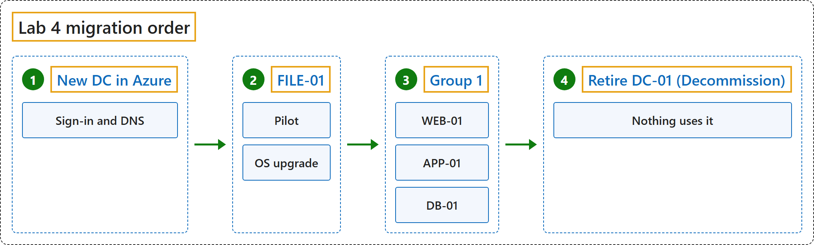
| Keyword | Description | 中文翻译 |
|---|---|---|
| 1 New DC in Azure | Comes first, because every server needs sign-in and DNS. | 最先做，因为每台服务器都需要登录和 DNS。 |
| 2 FILE-01 | The pilot, with its OS upgrade, before the October 13, 2026 security deadline. | 试点，同时升级操作系统，赶在 2026 年 10 月 13 日安全支持截止之前。 |
| 3 Group 1 | WEB-01, APP-01 and DB-01 move together in one maintenance window. | WEB-01、APP-01 和 DB-01 在同一个维护窗口里一起迁移。 |
| 4 Retire DC-01 (Decommission) | Only after nothing uses it. | 要等到没有任何东西再用它之后。 |
Lab 5: Rehosting to Azure VMware Solution (W5)
CAF: Adopt > Migration.
Scenario: Washington State L&I migrates more than 300 VMs to Azure VMware Solution in phases, in under nine months, without disrupting daily operations.
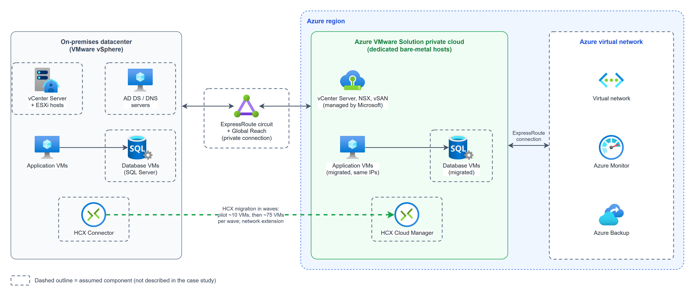
| Keyword | Description | 中文翻译 |
|---|---|---|
| 1 Rehost | Moves VMs without code changes: the fastest, lowest-risk way to finish in under nine months. | 不改代码迁移虚拟机：要在九个月内完成，这是最快、风险最低的方式。 |
| 2 Rehost vs replatform | Rehost moves the VM as is; replatform makes small changes to use a managed platform. | 重新托管把虚拟机原样搬过去；重新平台化做少量修改，用上托管平台。 |
| 3 Azure VMware Solution | Runs vCenter, NSX and vSAN on dedicated hosts in Azure, so VMware VMs move without conversion. | 在 Azure 的专用主机上运行 vCenter、NSX 和 vSAN，所以 VMware 虚拟机不用转换就能迁过去。 |
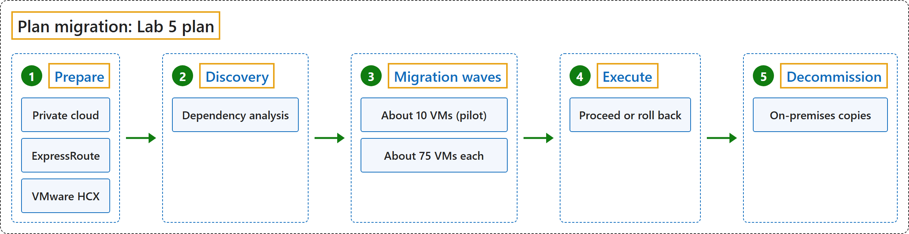
| Keyword | Description | 中文翻译 |
|---|---|---|
| 1 Prepare | Deploy the private cloud, ExpressRoute with Global Reach, and VMware HCX, which keeps the VMs' IP addresses. | 部署私有云、带 Global Reach 的 ExpressRoute，以及能保留虚拟机 IP 地址的 VMware HCX。 |
| 2 Discovery | Dependency analysis puts each application and everything it calls in the same wave. | 依赖分析把每个应用和它调用的所有东西放进同一批次。 |
| 3 Migration waves | A pilot of about 10 VMs proves the tools, network and runbook; then about 75 VMs each, from lowest to highest criticality. | 试点约 10 台虚拟机，验证工具、网络和操作手册；之后每批大约 75 台，按重要性从低到高。 |
| 4 Execute | Proceed or roll back: proceed after tests and 48 hours stable; otherwise roll back to the intact on-premises VMs. | 继续还是回滚：测试通过并稳定 48 小时后继续；否则回滚到完好的本地虚拟机。 |
| 5 Decommission | After each wave's stabilization period, the on-premises copies are retired. | 每一批的稳定期结束后，下线本地副本。 |
Refactoring (Replatform)
CAF: Adopt > Modernization.
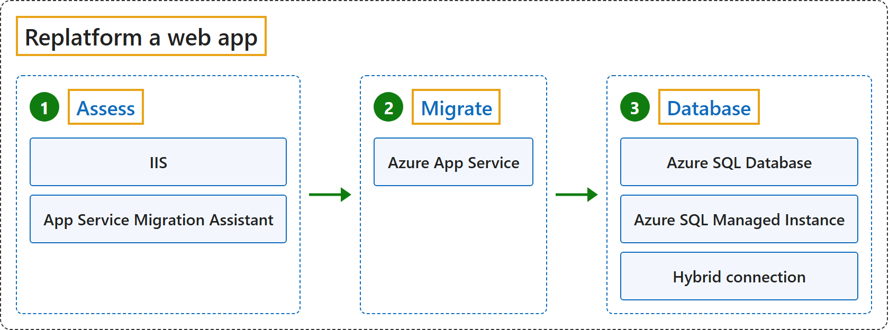
| Keyword | Description | 中文翻译 |
|---|---|---|
| 1 Assess | The first step checks whether the app can move. | 第一步检查应用能不能迁。 |
| 1.1 IIS | The Windows web server that hosts the ASP.NET app on premises. | 在本地托管 ASP.NET 应用的 Windows Web 服务器。 |
| 1.2 App Service Migration Assistant | The tool that first assesses the app, then migrates it. | 先评估应用、再迁移它的工具。 |
| 2 Migrate | The second step moves the app. | 第二步迁移应用。 |
| 2.1 Azure App Service | Runs the app and handles OS patching, scaling and load balancing. | 运行应用，并负责操作系统补丁、扩缩容和负载均衡。 |
| 3 Database | The third step moves or connects the database. | 第三步迁移或连接数据库。 |
| 3.1 Azure SQL Database | A managed database in Azure. | Azure 上的托管数据库。 |
| 3.2 Azure SQL Managed Instance | A managed SQL Server instance, closest to on-premises SQL Server. | 托管的 SQL Server 实例，最接近本地的 SQL Server。 |
| 3.3 Hybrid connection | Links the app to a database that stays on premises. | 把应用连到留在本地的数据库。 |
Lab 6: AWS, Azure and Google Cloud services
Scenario: Name the equivalent AWS, Azure and Google Cloud service for 30 service descriptions, then compare their similarities, differences and naming.
| Keyword | Description | 中文翻译 |
|---|---|---|
| 1 Similarities | Most services match one to one, and all three offer VMs, PaaS, serverless and Kubernetes. | 大多数服务一一对应，三家都提供虚拟机、PaaS、无服务器和 Kubernetes。 |
| 2 Differences | RDS and Cloud SQL cover several database engines in one service, while Azure has one per engine; Azure splits load balancing and protection into several services. | RDS 和 Cloud SQL 用一个服务支持多种数据库引擎，而 Azure 每种引擎一个服务；Azure 把负载均衡和防护拆成好几个服务。 |
| 3 Unique features | Some services add capabilities their counterparts lack. | 有些服务提供了对手没有的功能。 |
| 4 Naming | AWS uses brand names and acronyms, Azure says "Azure" plus the function, and Google says "Cloud" plus the function. | AWS 用品牌名和缩写，Azure 用 "Azure" 加功能名，Google 用 "Cloud" 加功能名。 |
Lab questions
Lab 2
Q1: What motivated Levi Strauss & Co. to migrate to the cloud?
| Keyword | Description | 中文翻译 |
|---|---|---|
| 1 Direct-to-consumer | The USD 10 billion DTC goal needs speed, automation and data. | 100 亿美元 DTC 目标需要速度、自动化和数据。 |
| 2 Technical debt | About 160 applications, nine ERP systems, 110 countries. | 约 160 个应用、九套 ERP、110 个国家。 |
| 3 Datacenter cost | Owning and operating datacenters became too expensive. | 自建和运营数据中心变得太贵。 |
| 4 Standardization | One global ERP means consistent processes and data. | 一套全球 ERP 带来统一的流程和数据。 |
| 5 AI readiness | Unified data is the foundation for AI and agents. | 统一数据是 AI 和智能体的基础。 |
Q2: What additional questions would you ask to better understand the company's existing infrastructure, applications, data, security, and business requirements?
| Keyword | Description | 中文翻译 |
|---|---|---|
| 1 Applications | Which are business-critical, and which could be retired or replaced with SaaS? | 哪些是业务关键的，哪些可以下线或换成 SaaS？ |
| 2 Servers | How many, how heavily used, and which OS is near end of support? | 有多少台、使用率多高、哪些操作系统快到支持期结束？ |
| 3 Data | How do nine ERP systems merge into one data model? | 九套 ERP 怎样合并成一个数据模型？ |
| 4 Networking | How do 110 countries connect, and what latency do they need? | 110 个国家怎样连接，需要多低的延迟？ |
| 5 Security | Identity, data-residency laws, RPO and RTO. | 身份、数据驻留法律、RPO 和 RTO。 |
| 6 Dependencies | Which applications must move in the same wave? | 哪些应用必须在同一波次迁移？ |
| 7 Business requirements | Downtime, retail peak periods, budget and deadline. | 停机时间、零售高峰期、预算和截止日期。 |
Q3: Who are the main migration stakeholders? Present their roles and responsibilities in a RACI matrix.
| Keyword | Description | 中文翻译 |
|---|---|---|
| 1 Stakeholders | Sponsor, ERP, infrastructure, migration, security, business leaders, Microsoft. | 发起人、ERP、基础设施、迁移、安全、业务负责人、Microsoft。 |
| 2 Responsible | The migration team for most activities. | 多数活动由迁移团队执行。 |
| 3 Accountable | The infrastructure director for most; the sponsor for strategy and budget. | 多数由基础设施总监负责；战略和预算由发起人负责。 |
| 4 Consulted | Gives input before decisions, such as security. | 决策前提供意见，比如安全团队。 |
| 5 Informed | Kept up to date, such as the sponsor after approval. | 随时知情，比如批准后的发起人。 |
Q4: Which cloud migration approach is most appropriate for Levi Strauss & Co.? Explain and justify your choice.
| Keyword | Description | 中文翻译 |
|---|---|---|
| 1 Rehost | Most servers: the fastest, lowest-risk way out of the datacenters. | 大多数服务器：离开数据中心最快、风险最低的方式。 |
| 2 Refactor | Databases to Azure SQL Managed Instance; third-party apps to AKS. | 数据库到 Azure SQL Managed Instance；第三方应用到 AKS。 |
| 3 Replace | Nine ERP systems become one global ERP. | 九套 ERP 变成一套全球 ERP。 |
| 4 Retire | Applications no longer needed: less to migrate, secure and pay for. | 不再需要的应用：减少迁移、保护和付费的范围。 |
Q5: What would a high-level schedule for the migration process look like?
| Keyword | Description | 中文翻译 |
|---|---|---|
| 1 Discover and assess | Months 1-2. | 第 1 到 2 个月。 |
| 2 Prepare the landing zone | Months 2-3. | 第 2 到 3 个月。 |
| 3 Pilot | Month 3: low-risk servers. | 第 3 个月：低风险服务器。 |
| 4 Migrate in waves | Months 4-8, avoiding retail peak periods. | 第 4 到 8 个月，避开零售高峰期。 |
| 5 Cut over and exit | Month 8: decommission the datacenters. | 第 8 个月：关停数据中心。 |
| 6 Optimize | Month 9 onward. | 第 9 个月起。 |
Q6: What are the main business and technical decision criteria that Levi Strauss & Co. should consider during the migration?
| Keyword | Description | 中文翻译 |
|---|---|---|
| 1 Business criteria | Cost, speed, continuity, strategic fit. | 成本、速度、连续性、战略契合。 |
| 2 Technical criteria | Compatibility, security and compliance, performance, resilience, operability. | 兼容性、安全与合规、性能、韧性、可运维性。 |
Lab 3
Q1: Describe how this application can be deployed in the cloud using IaaS infrastructure.
| Keyword | Description | 中文翻译 |
|---|---|---|
| 1 Team-managed VMs | Azure provides only VMs, disks and network. | Azure 只提供虚拟机、磁盘和网络。 |
| 2 Tiers | Each tier has its own subnet and two VMs in different availability zones. | 每层有自己的子网，两台虚拟机放在不同可用区。 |
| 3 Software | HAProxy, Nginx, Flask, PostgreSQL with a replicated standby. | HAProxy、Nginx、Flask，以及带复制备库的 PostgreSQL。 |
| 4 Management VMs | Jumpbox, monitoring, NAT, backup; 14 VMs in total. | 跳板机、监控、NAT、备份；共 14 台虚拟机。 |
Q2: Describe how this application can be deployed in the cloud using PaaS infrastructure.
| Keyword | Description | 中文翻译 |
|---|---|---|
| 1 Managed services | Azure runs the servers, patching, scaling and backups. | Azure 负责服务器、补丁、扩缩容和备份。 |
| 2 React | Azure Static Web Apps. | Azure Static Web Apps。 |
| 3 Flask | Azure App Service, on at least two instances. | Azure App Service，至少两个实例。 |
| 4 PostgreSQL | Flexible Server, reached through VNet integration. | Flexible Server，通过 VNet 集成访问。 |
| 5 Key Vault | Keeps the connection string out of code. | 让连接字符串不留在代码里。 |
Lab 4
Q1.1: Define digital estate in your own words.
| Keyword | Description | 中文翻译 |
|---|---|---|
| 1 Digital estate | Everything IT runs today: servers, applications, data and their connections. | IT 现在运行的一切：服务器、应用、数据及其连接。 |
Q1.2: Explain why understanding the digital estate is necessary before planning a cloud migration.
| Keyword | Description | 中文翻译 |
|---|---|---|
| 1 Dependent decisions | Sizing, cost and migration order depend on it. | 规格、成本和迁移顺序都取决于它。 |
| 2 Inventory | Lists only roles and OS versions, so it is only a starting point. | 只列了角色和操作系统版本，所以只是起点。 |
Q1.3: Describe three risks of migrating without adequate discovery and assessment.
| Keyword | Description | 中文翻译 |
|---|---|---|
| 1 Outages | Missed dependencies, such as moving APP-01 without DB-01. | 遗漏依赖，比如迁了 APP-01 没迁 DB-01。 |
| 2 Blockers | Found too late, such as FILE-01 at cutover. | 发现太晚，比如切换时才发现 FILE-01 的问题。 |
| 3 Wrong size and cost | Copying specs oversizes most VMs, and may undersize DB-01. | 照搬配置会让多数虚拟机配得过大，也可能让 DB-01 配得过小。 |
Q2.1: The discovery approach and how it works at a high level.
| Keyword | Description | 中文翻译 |
|---|---|---|
| 1 Agentless | The Azure Migrate appliance on vCenter reads each VM. | vCenter 上的 Azure Migrate 设备读取每台虚拟机。 |
| 2 About 30 days | Collect long enough to capture peak usage. | 收集足够长时间，捕捉使用高峰。 |
| 3 Assessments | Created from the collected data. | 用收集到的数据创建。 |
Q2.2: The role of the Azure Migrate appliance and its connection to vCenter.
| Keyword | Description | 中文翻译 |
|---|---|---|
| 1 Appliance | A VM deployed on vCenter from an OVA template. | 由 OVA 模板部署在 vCenter 上的虚拟机。 |
| 2 Connection | A read-only account on port 443, through the vSphere APIs. | 只读账号，走 443 端口，经 vSphere API。 |
| 3 Agentless | Nothing is installed on the five servers. | 五台服务器上什么都不用装。 |
Q2.3: The configuration and performance information you would collect.
| Keyword | Description | 中文翻译 |
|---|---|---|
| 1 Configuration | vCPU, RAM, disks, NICs, OS version. | vCPU、内存、磁盘、网卡、操作系统版本。 |
| 2 Performance | CPU, memory, disk IOPS and throughput, network traffic. | CPU、内存、磁盘 IOPS 和吞吐量、网络流量。 |
| 3 Software | Applications, SQL Server version, IIS sites. | 应用、SQL Server 版本、IIS 站点。 |
| 4 Dependencies | TCP connections with process and port. | 带进程和端口的 TCP 连接。 |
Q2.4: The servers and workloads you would investigate.
| Keyword | Description | 中文翻译 |
|---|---|---|
| 1 DB-01 | SQL version, database size, performance. | SQL 版本、数据库大小、性能。 |
| 2 FILE-01 | Legacy OS, share sizes, who uses the shares. | 旧操作系统、共享大小、谁在用。 |
| 3 DC-01 | Whether it runs DNS, and which servers depend on it. | 是否运行 DNS，哪些服务器依赖它。 |
Q2.5: Additional information needed from the organization to complete the assessment.
| Keyword | Description | 中文翻译 |
|---|---|---|
| 1 Downtime | Downtime limits and RPO/RTO for each application. | 每个应用的停机限制和 RPO/RTO。 |
| 2 Applications | Versions and owners. | 版本和负责人。 |
| 3 Licenses | Windows Server and SQL Server. | Windows Server 和 SQL Server。 |
| 4 WEB-01 | Public DNS name and TLS certificate. | 公网 DNS 名称和 TLS 证书。 |
Q2.6: Distinguish discovering assets from assessing their suitability for migration.
| Keyword | Description | 中文翻译 |
|---|---|---|
| 1 Discovery | Collects facts: what exists and how it is configured, used and connected. | 收集事实：有什么、怎样配置、使用和连接。 |
| 2 Assessment | Uses those facts to judge readiness, VM size and monthly cost. | 用这些事实判断就绪情况、虚拟机规格和每月成本。 |
Q3.1: Identify dependencies between the servers.
| Keyword | Description | 中文翻译 |
|---|---|---|
| 1 Application chain | Internet users → WEB-01 → APP-01 → DB-01. | 互联网用户 → WEB-01 → APP-01 → DB-01。 |
| 2 Identity | All servers → DC-01. | 所有服务器 → DC-01。 |
| 3 File shares | Users and APP-01 → FILE-01. | 用户和 APP-01 → FILE-01。 |
Q3.2: Clearly distinguish confirmed dependencies from assumed dependencies.
| Keyword | Description | 中文翻译 |
|---|---|---|
| 1 Confirmed | APP-01 → DB-01, internet users → WEB-01; both from the inventory. | APP-01 → DB-01，互联网用户 → WEB-01；都来自清单。 |
| 2 Assumed | WEB-01 → APP-01, all servers → DC-01, users and APP-01 → FILE-01. | WEB-01 → APP-01，所有服务器 → DC-01，用户和 APP-01 → FILE-01。 |
Q3.3: Explain how you would validate assumed dependencies during discovery.
| Keyword | Description | 中文翻译 |
|---|---|---|
| 1 Dependency analysis | Agentless: shows TCP connections with process and port. | 无代理：显示带进程和端口的 TCP 连接。 |
| 2 Ports | Connections to DC-01 on 88, 389 or 53 confirm it. | 连到 DC-01 的 88、389 或 53 端口即可确认。 |
| 3 Application owners | Check the results with them. | 和他们核对结果。 |
Q3.4: Explain how dependency analysis reduces the risk of outages.
| Keyword | Description | 中文翻译 |
|---|---|---|
| 1 Move together | Dependent servers move together, so nothing is left behind or cut off. | 互相依赖的服务器一起迁移，所以不会有东西被落下或断开。 |
Q3.5: Propose one logical migration group and justify which servers belong together.
| Keyword | Description | 中文翻译 |
|---|---|---|
| 1 Migration group | WEB-01, APP-01 and DB-01: one application. | WEB-01、APP-01 和 DB-01：同一个应用。 |
| 2 Why not split | Database traffic over the VPN adds delay and a new point of failure. | 数据库流量走 VPN 会增加延迟和新的故障点。 |
Q3.6: Include a simple dependency diagram.
| Keyword | Description | 中文翻译 |
|---|---|---|
| 1 Group 1 | WEB-01 → APP-01 → DB-01. | WEB-01 → APP-01 → DB-01。 |
| 2 Shared servers | WEB-01, APP-01, DB-01 and FILE-01 → DC-01; APP-01 → FILE-01. | WEB-01、APP-01、DB-01 和 FILE-01 → DC-01；APP-01 → FILE-01。 |
| 3 Lines | Solid is confirmed; dotted is assumed. | 实线是已确认；虚线是假设。 |
Q4.1: Complete the readiness table. For each server, justify the classification, identify the information needed to confirm it, and propose remediation or further assessment.
| Keyword | Description | 中文翻译 |
|---|---|---|
| 1 WEB-01 | Conditionally Ready: needs a secure endpoint, certificate and DNS change. | 有条件就绪：需要安全入口、证书和 DNS 变更。 |
| 2 APP-01 | Conditionally Ready: confirm vendor support; moves with DB-01. | 有条件就绪：确认厂商支持；和 DB-01 一起迁。 |
| 3 DB-01 | Insufficient Information: SQL version unknown; run the SQL assessment. | 信息不足：SQL 版本未知；做 SQL 评估。 |
| 4 DC-01 | Conditionally Ready: build a new DC in Azure and let AD replicate. | 有条件就绪：在 Azure 新建 DC，让 AD 复制。 |
| 5 FILE-01 | Not Ready: Windows Server 2012 R2 security updates end; upgrade the OS during migration. | 未就绪：Windows Server 2012 R2 安全更新结束；迁移时升级操作系统。 |
Q5.1: Explain how Azure Migrate supports Azure VM sizing and cost estimation.
| Keyword | Description | 中文翻译 |
|---|---|---|
| 1 VM size and disk type | Recommended from configuration and performance data. | 根据配置和性能数据推荐。 |
| 2 Monthly cost | Compute and storage for the chosen region and pricing. | 所选区域和定价下的计算和存储费用。 |
Q5.2: Explain the difference between performance-based sizing and as-is sizing.
| Keyword | Description | 中文翻译 |
|---|---|---|
| 1 Performance-based | Uses actual usage over time, so VMs are right-sized. | 使用一段时间的实际使用量，所以规格合适。 |
| 2 As-is | Copies on-premises specs, so VMs are often oversized. | 照搬本地配置，所以常常配得过大。 |
Q5.3: Identify the configuration and utilization data needed to recommend appropriate Azure VM sizes.
| Keyword | Description | 中文翻译 |
|---|---|---|
| 1 Configuration | vCPU, RAM, disk sizes. | vCPU、内存、磁盘大小。 |
| 2 Utilization | CPU and memory (average and peak), disk IOPS and throughput. | CPU 和内存（平均和峰值）、磁盘 IOPS 和吞吐量。 |
| 3 DB-01 | Database sizes. | 数据库大小。 |
Q5.4: Describe three factors that could affect the estimated Azure operating cost.
| Keyword | Description | 中文翻译 |
|---|---|---|
| 1 VM size and disk type | The biggest part of the bill. | 账单中最大的部分。 |
| 2 Licensing | Pay-as-you-go or Azure Hybrid Benefit. | 即用即付或 Azure Hybrid Benefit。 |
| 3 Commitment | Reserved instances cost less than pay-as-you-go. | 预留实例比即用即付便宜。 |
Q5.5: Explain why the provided inventory is insufficient to produce reliable estimates.
| Keyword | Description | 中文翻译 |
|---|---|---|
| 1 Missing data | No CPU, memory, disk or usage data, not even the SQL version, so any estimate is a guess. | 没有 CPU、内存、磁盘或使用数据，连 SQL 版本都没有，所以任何估算都是猜测。 |
Q6.1: Propose a high-level migration plan that considers business criticality, dependencies and migration groups, downtime constraints, migration risk, and readiness and required remediation.
| Keyword | Description | 中文翻译 |
|---|---|---|
| 1 Risk order | From lowest to highest risk; mission-critical DB-01 goes last. | 按风险从低到高；关键任务的 DB-01 最后迁。 |
| 2 Dependencies | The new DC first; group 1 moves together. | 先建新 DC；组 1 一起迁。 |
| 3 Downtime | One maintenance window; only the final sync and cutover. | 一个维护窗口；只有最终同步和切换时停机。 |
| 4 Remediation | FILE-01 with its OS upgrade; group 1 after the SQL assessment. | FILE-01 同时升级操作系统；组 1 在 SQL 评估之后。 |
Q6.2: Preparation: Identify prerequisites needed before migrating production workloads.
| Keyword | Description | 中文翻译 |
|---|---|---|
| 1 Network | Build the Azure network and set up the VPN. | 搭建 Azure 网络并配置 VPN。 |
| 2 Assessment | Finish discovery and assessment; confirm RPO/RTO. | 完成发现和评估；确认 RPO/RTO。 |
| 3 Safety | Back up all servers and agree on maintenance windows. | 备份所有服务器，商定维护窗口。 |
Q6.3: First workload or pilot: Explain what you would migrate or test first and why.
| Keyword | Description | 中文翻译 |
|---|---|---|
| 1 FILE-01 | A test migration with the OS upgrade. | 做测试迁移并升级操作系统。 |
| 2 Why first | Outside the application group, with an October 13 deadline. | 不在应用组内，且有 10 月 13 日的截止日期。 |
Q6.4: Migration order: Propose and justify the order of the remaining workloads or groups.
| Keyword | Description | 中文翻译 |
|---|---|---|
| 1 New DC | Every server needs sign-in and DNS. | 每台服务器都需要登录和 DNS。 |
| 2 FILE-01 | Few dependencies and a security deadline. | 依赖少，且有安全截止日期。 |
| 3 Group 1 | Last, because DB-01 is mission-critical. | 最后迁，因为 DB-01 是关键任务。 |
| 4 Retire DC-01 | Only after nothing uses it. | 要等到没有东西再用它。 |
Q6.5: Validation: Describe how you would confirm that migrated services work correctly.
| Keyword | Description | 中文翻译 |
|---|---|---|
| 1 Servers | Boot, join the domain and resolve DNS. | 能启动、加入域并解析 DNS。 |
| 2 Application | The website loads over HTTPS; APP-01 reads and writes DB-01. | 网站能通过 HTTPS 打开；APP-01 能读写 DB-01。 |
| 3 Data and files | DB-01 data matches the source; users open their shares. | DB-01 数据与源一致；用户能打开共享。 |
Q6.6: Rollback: Identify a condition that would trigger rollback and describe the high-level recovery approach.
| Keyword | Description | 中文翻译 |
|---|---|---|
| 1 Trigger | A failed check that cannot be fixed within the window, such as APP-01 unable to reach DB-01. | 检查失败且无法在窗口内修复，比如 APP-01 连不上 DB-01。 |
| 2 Recovery | Point DNS back, restart the originals, stop the Azure VMs. | 把 DNS 指回，重启原服务器，停掉 Azure 虚拟机。 |
Q6.7: If you propose a pilot, explain how it can be tested without disrupting dependent production systems.
| Keyword | Description | 中文翻译 |
|---|---|---|
| 1 Test migration | A copy in an isolated Azure network; the original keeps running. | 在隔离的 Azure 网络里创建副本；原服务器继续运行。 |
| 2 Clean up | The copy is removed after testing. | 测试后清理副本。 |
Lab 5
Q1.1: Identify two reasons the organization migrated to the cloud.
| Keyword | Description | 中文翻译 |
|---|---|---|
| 1 Aging infrastructure | Over 400 servers and 200 applications built over 45 years. | 45 年积累的 400 多台服务器和 200 多个应用。 |
| 2 State legislation | A 2021 law encouraged agencies to use the cloud. | 2021 年的法律鼓励机构使用云。 |
Q1.2: Explain why rehosting was appropriate.
| Keyword | Description | 中文翻译 |
|---|---|---|
| 1 Speed | Moves VMs without code changes, within nine months. | 不改代码迁移虚拟机，在九个月内完成。 |
| 2 No disruption | Azure VMware Solution runs the same VMware stack. | Azure VMware Solution 运行相同的 VMware 技术栈。 |
| 3 Safe partial progress | Waves mean a half-finished migration still works. | 波次让迁到一半时系统仍能工作。 |
| 4 Modernize later | Applications improve one at a time afterwards. | 之后逐个改进应用。 |
Q1.3: Explain how rehosting differs from replatforming.
| Keyword | Description | 中文翻译 |
|---|---|---|
| 1 Rehosting | Moves the VM as is; only where it runs changes. | 把虚拟机原样迁走；只改变运行位置。 |
| 2 Replatforming | Small changes to use a managed platform; less operations work, more testing. | 做少量修改以使用托管平台；运维更省，测试更多。 |
Q2: Draw a high-level diagram showing the migration from an on-premises VMware environment to Azure VMware Solution.
| Keyword | Description | 中文翻译 |
|---|---|---|
| 1 On-premises | vSphere datacenter with application, database and AD DS/DNS VMs. | vSphere 数据中心，含应用、数据库和 AD DS/DNS 虚拟机。 |
| 2 ExpressRoute with Global Reach | The private link between the two sides. | 两边之间的私有连接。 |
| 3 Private cloud | vCenter, NSX and vSAN on dedicated hosts. | 专用主机上的 vCenter、NSX 和 vSAN。 |
| 4 VMware HCX | Moves VMs in waves and keeps their IP addresses. | 分波次迁移虚拟机并保留 IP 地址。 |
Q3.1: Propose a phased migration plan.
| Keyword | Description | 中文翻译 |
|---|---|---|
| 1 Prepare | Private cloud, ExpressRoute, HCX, and a baseline. | 私有云、ExpressRoute、HCX 和基线。 |
| 2 Discover and group | Map dependencies and build waves. | 梳理依赖并建立波次。 |
| 3 Pilot wave | About 10 low-risk VMs. | 约 10 台低风险虚拟机。 |
| 4 Main waves | About 75 VMs each, most critical last. | 每批约 75 台，最关键的最后迁。 |
| 5 Stabilize and decommission | Retire on-premises copies, then modernize. | 下线本地副本，然后现代化。 |
Q3.2: Explain how you would group dependent workloads.
| Keyword | Description | 中文翻译 |
|---|---|---|
| 1 Find dependencies | Dependency analysis and owner interviews. | 依赖分析和访谈负责人。 |
| 2 Same wave | An application and everything it calls. | 应用和它调用的一切。 |
| 3 Shared services | AD DS and DNS stay reachable from both sides, and move last. | AD DS 和 DNS 两边都能访问，最后迁。 |
| 4 Order | From lowest to highest criticality. | 按重要性从低到高。 |
Q3.3: Explain how you would test a migration wave.
| Keyword | Description | 中文翻译 |
|---|---|---|
| 1 Before cutover | A test migration in an isolated network segment. | 在隔离网段做测试迁移。 |
| 2 At cutover | VMs keep their IPs, smoke tests pass, owners sign off. | 虚拟机保留 IP，冒烟测试通过，负责人签字。 |
| 3 After cutover | Compare with the baseline; confirm monitoring and backup. | 与基线比较；确认监控和备份。 |
Q3.4: Explain how you would decide whether to proceed or roll back.
| Keyword | Description | 中文翻译 |
|---|---|---|
| 1 Proceed | Tests pass, within about 10% of baseline, 48 hours with no critical incidents, backups complete. | 测试通过、在基线约 10% 以内、48 小时无严重事故、备份完成。 |
| 2 Roll back | A critical application cannot be fixed in the window, data is lost, or performance is far below baseline. | 关键应用无法在窗口内修复、数据丢失或性能远低于基线。 |
| 3 How | Keep on-premises VMs intact; move back with HCX or restart the originals, then reconcile data. | 保持本地虚拟机完好；用 HCX 迁回或重启原虚拟机，然后核对数据。 |
Lab 6
Q1: Key similarities and differences between equivalent services from the three cloud providers.
| Keyword | Description | 中文翻译 |
|---|---|---|
| 1 Similarities | Most services match one to one; all offer VMs, PaaS, serverless and Kubernetes. | 多数服务一一对应；都有虚拟机、PaaS、无服务器和 Kubernetes。 |
| 2 Differences | RDS and Cloud SQL cover several engines in one service; Azure has one per engine. | RDS 和 Cloud SQL 一个服务支持多种引擎；Azure 每种引擎一个服务。 |
| 3 No match | Google has no desktop as a service (row 25); Azure has no media transcoding (row 29). | Google 没有桌面即服务（第 25 行）；Azure 没有媒体转码（第 29 行）。 |
Q2: Unique features or capabilities that certain services may offer compared to their counterparts.
| Keyword | Description | 中文翻译 |
|---|---|---|
| 1 Azure Event Hubs | Apache Kafka compatible without code changes. | 不改代码就兼容 Apache Kafka。 |
| 2 AWS Step Functions | Calls over 9,000 API actions. | 能调用 9000 多个 API 操作。 |
| 3 Amazon WorkSpaces | Personal and Pools modes. | Personal 和 Pools 两种模式。 |
Q3: How the naming conventions between cloud providers differ for similar services.
| Keyword | Description | 中文翻译 |
|---|---|---|
| 1 AWS | Brand names and acronyms, such as EC2 and S3. | 品牌名和缩写，比如 EC2 和 S3。 |
| 2 Azure | "Azure" plus the function. | "Azure" 加功能名。 |
| 3 Google Cloud | Often "Cloud" plus the function. | 常用 "Cloud" 加功能名。 |
| 4 Names change | Azure Purview became Microsoft Purview. | Azure Purview 变成 Microsoft Purview。 |
Comparison table: For each description, identify the corresponding service name in AWS, Azure, and Google Cloud.
| # | Description | AWS | Azure | Google Cloud |
|---|---|---|---|---|
| 1 | A compute service that provides scalable virtual machines for running applications. | Amazon EC2 | Azure Virtual Machines | Compute Engine |
| 2 | An object storage service used to store and retrieve data, commonly used for backups and static website content. | Amazon S3 | Azure Blob Storage | Cloud Storage |
| 3 | A managed relational database service that supports multiple database engines like MySQL, PostgreSQL, and SQL Server. | Amazon RDS | Azure SQL Database, Azure Database for MySQL, Azure Database for PostgreSQL | Cloud SQL |
| 4 | A serverless compute service that allows you to run code in response to events without provisioning or managing servers. | AWS Lambda | Azure Functions | Cloud Run functions |
| 5 | A virtual private network service that allows you to create isolated networks within the cloud provider's infrastructure. | Amazon VPC | Azure Virtual Network | Virtual Private Cloud (VPC) |
| 6 | A content delivery network (CDN) service that delivers data, videos, applications, and APIs to customers around the world with low latency. | Amazon CloudFront | Azure Front Door | Cloud CDN |
| 7 | A managed NoSQL database service designed for low-latency, high-scale applications. | Amazon DynamoDB | Azure Cosmos DB | Bigtable (Firestore for documents) |
| 8 | A block storage service for use with virtual machines, offering persistent storage for data. | Amazon EBS | Azure Managed Disks | Persistent Disk / Hyperdisk |
| 9 | A managed container orchestration service based on Kubernetes. | Amazon EKS | Azure Kubernetes Service (AKS) | Google Kubernetes Engine (GKE) |
| 10 | A service for managing user access and encryption keys to secure cloud resources. | AWS IAM + AWS KMS | Microsoft Entra ID + Azure RBAC + Azure Key Vault | Cloud IAM + Cloud KMS |
| 11 | A platform that automates application deployment and scaling without needing to manage infrastructure. | AWS Elastic Beanstalk | Azure App Service | App Engine |
| 12 | A service that provides monitoring and logging of applications and infrastructure, offering insights into resource usage and performance. | Amazon CloudWatch | Azure Monitor | Cloud Monitoring + Cloud Logging |
| 13 | A domain name system (DNS) service that routes traffic globally and translates domain names to IP addresses. | Amazon Route 53 | Azure DNS | Cloud DNS |
| 14 | A load balancing service that distributes incoming network traffic across multiple targets, improving application availability. | Elastic Load Balancing | Azure Load Balancer (Layer 4), Azure Application Gateway (Layer 7) | Cloud Load Balancing |
| 15 | A service that automatically scales your cloud infrastructure based on demand, ensuring resources are available as needed. | Amazon EC2 Auto Scaling | Virtual Machine Scale Sets with Azure Autoscale | Compute Engine autoscaler (managed instance groups) |
| 16 | A message queuing service that enables applications to send and receive messages between different components. | Amazon SQS | Azure Queue Storage, Azure Service Bus | Cloud Tasks (Pub/Sub for publish/subscribe) |
| 17 | A managed real-time data streaming service that collects and processes large amounts of data from various sources. | Amazon Kinesis Data Streams | Azure Event Hubs | Pub/Sub |
| 18 | A fully managed, highly scalable data warehouse service optimized for analytics and large-scale queries. | Amazon Redshift | Azure Synapse Analytics | BigQuery |
| 19 | A service that automates the execution of workflows and allows the integration of different cloud services in a sequence of steps. | AWS Step Functions | Azure Logic Apps | Workflows |
| 20 | A service that integrates multiple data sources and enables data migration, transformation, and movement across platforms. | AWS Glue | Azure Data Factory | Cloud Data Fusion |
| 21 | A data catalog and governance service that helps manage metadata across your data estate, supporting compliance and security. | Amazon DataZone (AWS Glue Data Catalog) | Microsoft Purview | Knowledge Catalog |
| 22 | A set of machine learning and AI services that provide pre-built models, APIs, and tools for developers to easily implement AI in their apps. | AWS AI services (Rekognition, Comprehend, Translate) and Amazon SageMaker | Azure AI services (Vision, Language, Translator) and Azure Machine Learning | Vertex AI and Cloud AI APIs (Vision AI, Natural Language AI, Translation AI) |
| 23 | A service that allows you to define and deploy infrastructure using code, automating the management of cloud resources. | AWS CloudFormation | Azure Resource Manager templates / Bicep | Infrastructure Manager (Terraform) |
| 24 | A fully managed CI/CD service that automates the building, testing, and deployment of applications to production environments. | AWS CodePipeline (with CodeBuild, CodeDeploy) | Azure Pipelines (Azure DevOps) | Cloud Build (with Cloud Deploy) |
| 25 | A desktop as a service (DaaS) offering that allows you to deploy virtual desktops in the cloud and access them remotely. | Amazon WorkSpaces | Azure Virtual Desktop | No first-party service (partner solutions) |
| 26 | A backup and disaster recovery service that helps to protect your data by creating backups and replicas of your cloud resources. | AWS Backup, AWS Elastic Disaster Recovery | Azure Backup, Azure Site Recovery | Backup and DR Service |
| 27 | A service designed for big data analytics, allowing organizations to store, process, and analyze large datasets in real time. | Amazon EMR | Azure HDInsight, Azure Databricks | Managed Service for Apache Spark (formerly Dataproc) |
| 28 | A file storage service for storing and sharing files with users, typically used in shared file systems across applications. | Amazon EFS | Azure Files | Filestore |
| 29 | A service that helps you transcode, process, and stream media content such as video and audio. | AWS Elemental MediaConvert | No first-party service (Azure Media Services retired in 2024; partner solutions) | Transcoder API |
| 30 | A real-time communication service used for sending notifications, emails, and text messages to users and devices. | Amazon SNS (email: Amazon SES) | Azure Notification Hubs, Azure Communication Services | Firebase Cloud Messaging (push only) |
CST8914 Accessible by Design
W9: Understanding WAI-ARIA
| Keyword | Description | 中文翻译 |
|---|---|---|
| 4.1 WAI-ARIA Roles | W9 teaches roles under static ARIA, a group name used by the lecture and not by the specification. | W9 把角色放在静态 ARIA 下，这个分组名称来自课程，不来自规范。 |
| 4.2 WAI-ARIA States and Properties | W9 teaches properties under static ARIA and states under dynamic ARIA. | W9 把属性放在静态 ARIA 下，把状态放在动态 ARIA 下。 |
| 6.6.2 Live Region Attributes | W9 teaches live regions under dynamic ARIA. | W9 把实时区域放在动态 ARIA 下。 |